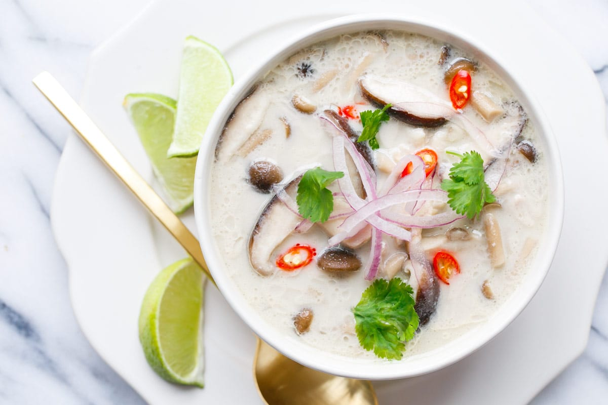

Tom Kha Kai

Description
Ingredients
- 2 tbsp coconut oil
- 1/2 onion
- 2 cloves garlic
- 1 thumb ginger
- 2 cups shiitake mushrooms
- 1 cup shredded carrots
- 2 1/2 cups chicken broth
- Juice of one lime
- 2 tsp fish sauce
- 1 tbsp coconut aminos
- 3/4 tsp curry paste
- 1 small stalk lemongrass
- 3/4 tsp sea salt
- 1/4 tsp black pepper
- 1 tbsp fresh cilantro
- lime wedges
Directions
- Using a medium stock pot, melt the coconut oil over medium heat.
- Add the onion and saute for 3-5 minutes, or until translucent. Add the ginger and garlic and saute for another 2-3 minutes.
- Add the carrots and shitake mushrooms and saute for 3-4 minutes or until lightly soft.
- Pour in the broth, coconut milk, fish sauce, coconut aminos, lime juice, and seasonings (reserving the cilantro) and mix well to combine.
- Bring to a low simmer and allow to simmer for 15-20 minutes.
- Serve topped with cilantro and additonal lime wedges to serve.